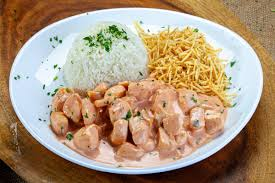

🍝 Receitas Salgadas
Voltar para Home

Strogonoff de Frango
Ver Passo a Passo
×
Strogonoff de Frango
" frameborder="0" allowfullscreen>
Ingredientes
500g de frango, 1 cebola, ketchup, mostarda, 1 caixa de creme de leite.